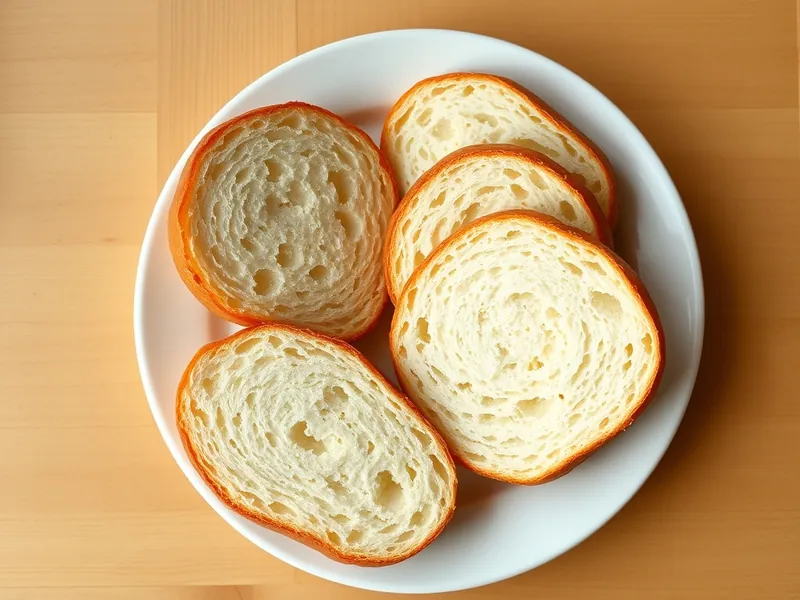

Домашний хлеб на дрожжах в духовке
Простой пшеничный хлеб в форме с хрустящей корочкой и мягким мякишем
210 мин10 порц.192 ккал на порциюБ 5 · Ж 3 · У 36Русская кухня
Открыть в приложении: порции, таймеры, список покупок
Продукты на 10 порц.
- Мука пшеничная500 г
- Вода320 мл
- Дрожжи сухие2 ч. л.
- Сахар2 ч. л.
- Соль2 ч. л.
- Растительное масло1 ст. л.
Как готовить
- Растворите в тёплой воде сахар и дрожжи и оставьте на 10 минут до пенки.
- Добавьте соль, масло и постепенно муку. Вымешивайте 10 минут до гладкого, упругого, чуть липкого теста.
- Переложите тесто в смазанную миску, накройте и оставьте в тепле на 60 минут, пока оно не увеличится вдвое.
- Обомните тесто, сформируйте продолговатый батон и уложите швом вниз в смазанную форму для хлеба 25 см. Накройте и оставьте на 40 минут, пока тесто не поднимется до краёв.
- Разогрейте духовку до 200 °C (сильный жар) и поставьте на дно миску с горячей водой для пара.
- Выпекайте 35-40 минут до тёмно-золотистой корочки: готовый хлеб при постукивании по дну звучит глухо.
- Выньте хлеб из формы и остудите на решётке не меньше 1 часа, иначе мякиш будет липким.
Совет. Воду берите тёплую, около 37 градусов: горячая убивает дрожжи, и тесто не поднимется.